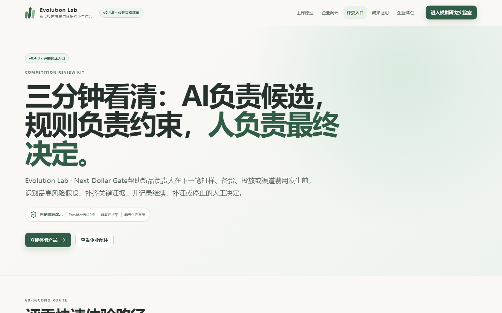
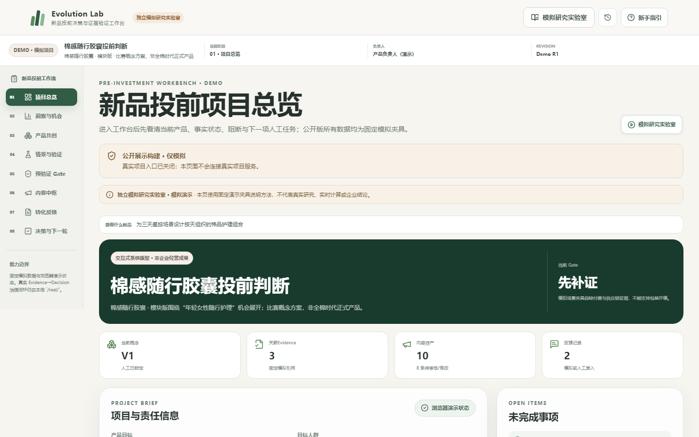
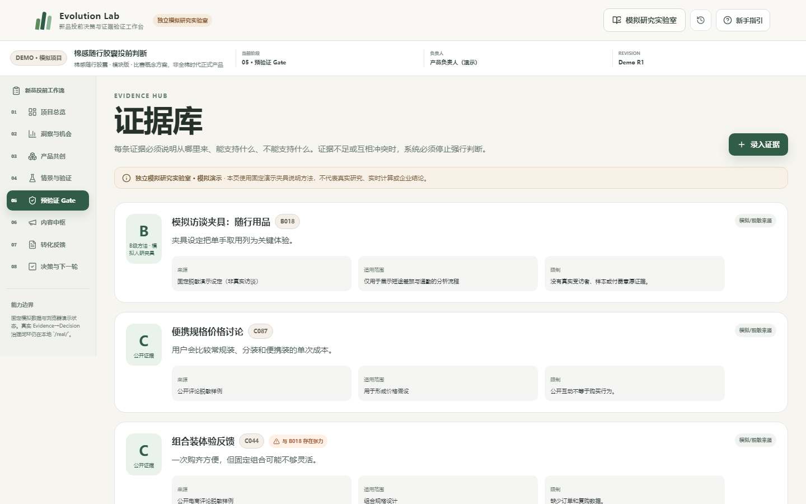
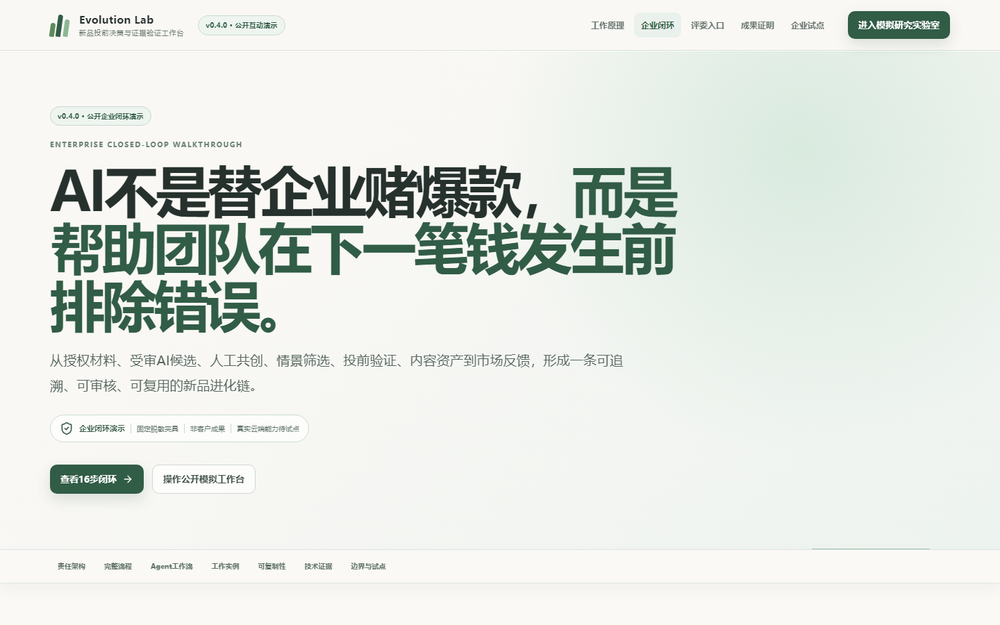
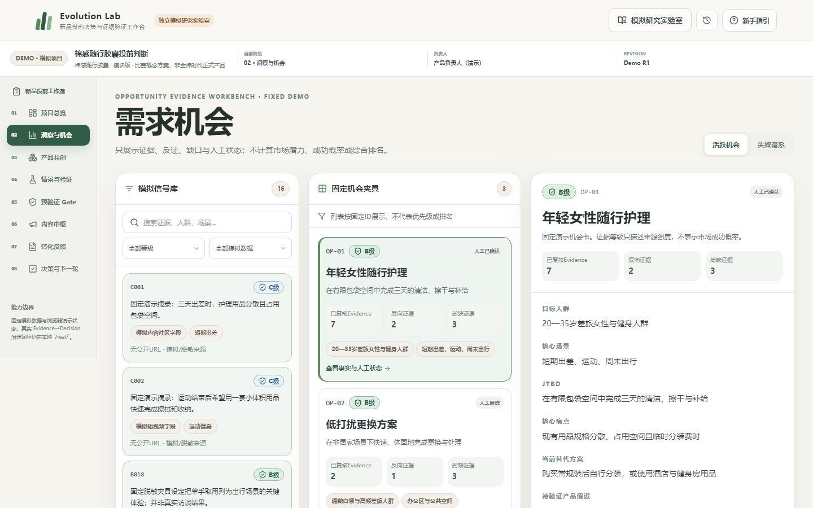
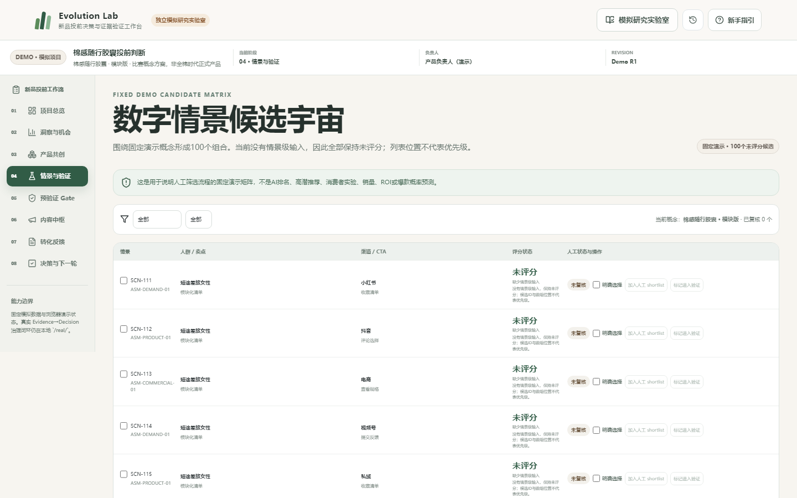
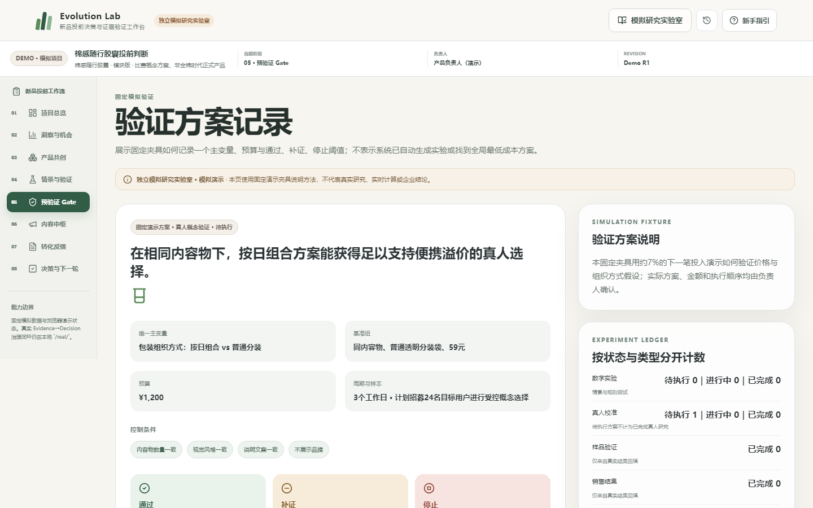
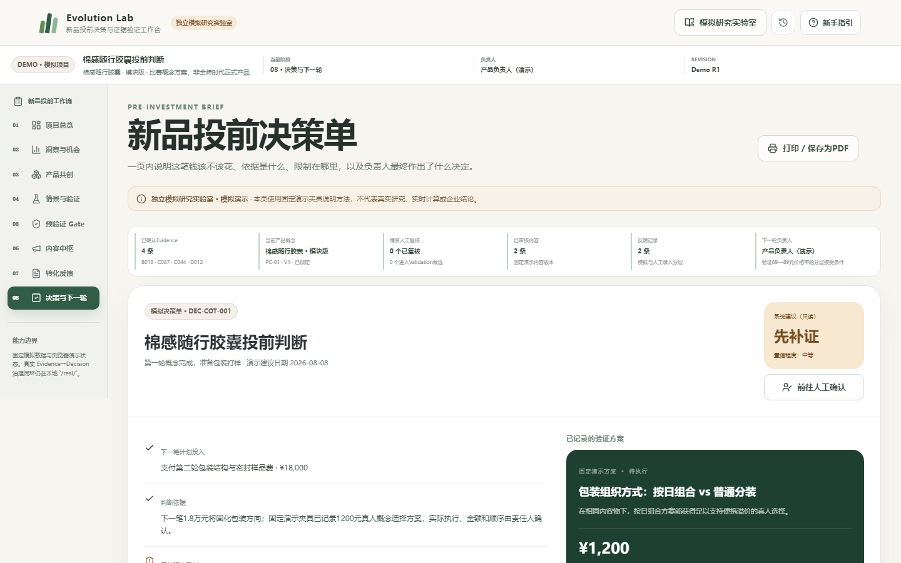
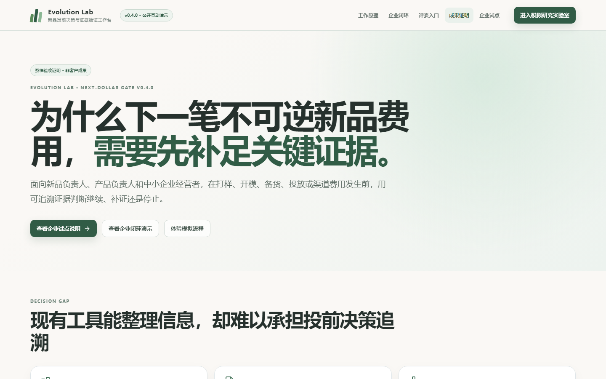

Evolution Lab · v0.4.0
新品真正危险的，
不是少一个创意，
而是证据不足时继续花钱。
Next-Dollar Gate · 新品投前决策与证据验证工作台
公开固定演示Provider 0人工最终决定
新品真正危险的，不是少一个创意，而是在证据不足时继续投入下一笔钱。
01Decision workspace
先明确
下一笔投入
项目、当前Gate、阻断和下一项人工任务，在同一工作台对齐。
不是自动审批不是ROI预测

Evolution Lab把下一笔投入、阻断和人工任务放在同一工作台。
02Evidence
结论必须
回到原文
来源、范围、限制、哈希和确认状态共同构成证据，不用流畅文案补写缺失事实。
支持与反证同屏变化触发stale

每项Evidence保留来源、范围、限制和确认状态；没有来源就不补写结论。
03Governed AIProposal
AI负责候选，
不负责事实
稳定ID、输入快照、Evidence引用、反证、不确定性、缺失输入与人工审核一个都不能少。
ai_proposal_v1Provider请求0次

AI只提出带引用、反证和不确定性的候选；当前Provider请求次数为0。
04Opportunity
候选必须
经过人审
事实、人工假设、AI候选与固定演示分开统计；没有证据就明确显示缺口。
接受编辑后接受拒绝

机会必须由人确认，事实、人工假设、AI候选与固定演示不会混算。
05Scenario universe
100个候选，
全部默认未评分
不使用位置公式、数组顺序、隐藏分数或自动Top N冒充智能收敛。
未复核未入选无伪优先级

100个情景是未评分候选宇宙，不是AI排名，也不会自动形成Top N。
06Human shortlist
Shortlist
只能人工选择
理由、Evidence、操作者自述、时间、revision和Audit共同保留。
选择与对比解耦刷新后恢复
Shortlist只能人工选择，并保存理由、Evidence、操作者、时间、revision和Audit。
07Validation
验证先写清
通过与停止阈值
唯一主变量、控制条件、预算、样本、周期与三档结果在执行前固定。
system_core_testworkflow_e2e_test

每项验证写清唯一主变量、控制条件、预算、样本、周期和三档阈值。
08Deterministic gate
证据不足，
系统就停止强行判断
固定NDG_GATE_V0.3.0只读取合格输入；AI不修改规则、阈值或结论。
CONTINUESUPPLEMENTSTOP

NDG_GATE_V0.3.0确定性运行；证据不足就返回SUPPLEMENT。
09Human decision
系统建议只读，
负责人承担决定
继续投入、先补证或停止都必须填写理由；不会自动触发预算、采购、订单或投放。
理由必填快照保留历史不可覆盖
Gate只是只读建议，最终继续、补证或停止由负责人填写理由确认。
10Engineering proof
公开演示与
本地正式域严格隔离
GitHub Pages没有FastAPI、SQLite、附件、客户数据或真实Provider；本地失败不回退伪成功。
pytestVitestPlaywrightartifact scan

GitHub Pages只部署固定公开演示；FastAPI与SQLite只属于本地封闭试点。
Next evidence
现在不需要更多功能。
只需要一份授权脱敏材料的小型POC。
当前证明工程治理路径，不证明市场、模型准确率、客户成果或ROI。
固定演示Provider 0非客户成果非云生产
当前证明工程治理路径，不证明市场、模型准确率、客户成果或ROI。下一步只需一份授权脱敏材料的小型POC。